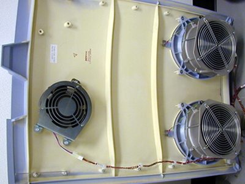
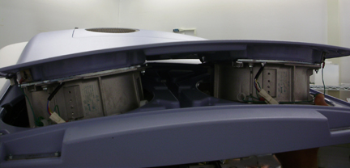
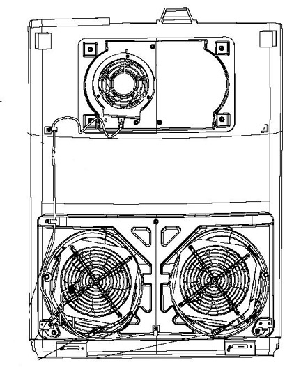
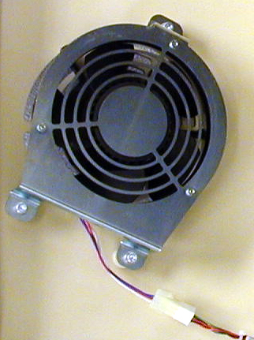
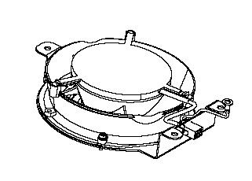

Operating Documentation
Direction 5193575-800, Rev# 5
LightSpeed 7.X Service Information - Adv
Operating Documentation |
| Required Persons | Preliminary Reqs | Procedure | Finalization |
|---|---|---|---|
| 1 | Timing Not Applicable | 30 mins | 15 mins |
This document defines the fan replacement process for two types of top covers, one with fixed main fans and one with the main fans removable as a pair.
The top cover fans are controlled by the stationary CFC board. You can swap the fan connections to verify that the fan is defective.
| Last Revised: | October 16, 2008 |
| Item | Qty | Effectivity | Part# | Manufacturer | |
|---|---|---|---|---|---|
| FE Toolkit | 1 | - | - | - | |
| 3 mm hex wrench | 1 | - | - | - | |
| Adjustable wrench | 1 | - | - | - | |
| Item | Qty | Effectivity | Part# | Manufacturer |
|---|---|---|---|---|
| Tie-wraps | AR | - | - | - |
| Hand Towels, for clean-up | AR | - | - | - |
| Item | Qty | Effectivity | Part# | Manufacturer | |
|---|---|---|---|---|---|
| Gantry Cooling Fan | - | - | - | ||
| Follow ALL required safety and PPE procedures customary for your organization, when working on this product. | |
| Condition | Reference | Eff |
|---|---|---|
Only trained service personnel should service the GE CT Scanner. | - | - |
There are two styles of top covers, one that has an independently removable section for the two main fans (2 piece top cover) and one that has all 3 fans mounted on a one piece top cover. Use the appropriate section below for your top cover style.
| POTENTIAL FOR SHOCK. | |
| VOLTAGE MAY BE PRESENT. POTENTIAL FOR INJURY IF COVERS REMOVED AND POWER IS LEFT ON. | |
| Always remove the right side cover first, and turn OFF power at the service switches. |
Remove gantry right side cover.
Refer to Parts Replacement → Gantry → Enclosure → (Cover Removal Procedure).
Turn OFF the three (3) main power switches (Axial Drive, HVDC and 120VAC) on the Service Switch Panel.
Disconnect the power plug to the applicable top cover. Removing left side cover if applicable.
Remove the applicable top cover.
This section defines the steps necessary for the cover shown in Illustration 1.
Illustration 1: Top cover without removable fan section

Place the top cover on an appropriate flat work surface, and locate the failed fan.
Disconnect the power cable that connect to the fans on the gantry top cover.
| NOTE: | Three cooling fans are mounted on the top covers. |
The two (2) primary fans are attached to the cover in four (4) locations around the fan assembly . You only need to remove the nuts and washers, to remove the fan. Do not remove the fan safety grill which is mounted to the cover assembly.
Remove the ground wire from the ground stud and disconnect the fan power connection connector.
Replace the defective fan and reverse the removal process. Connect all removed cables, and securely tighten all removed hardware.
This section defines the steps necessary for the cover shown in Illustration 2.
Illustration 2: Top cover with removable fan section

Place the top cover on an appropriate flat work surface, and locate the failed fan.
| NOTE: | Three cooling fans are mounted on the top covers. |
Disconnect the power cable that connect to the fans on the gantry top cover.
Illustration 3: Top cover with removable section

The two (2) primary fans are attached to the cover in four (4) locations around the fan assembly. You only need to remove the screws at each corner of the fan, to remove the fan. Do not remove the fan safety grill that is mounted to the cover.
Remove the ground wire from the ground stud.
Replace the defective fan and reverse the removal process. Connect all removed cables, and securely tighten all removed hardware.
The fan is attached to the cover in three (3) locations around the fan assembly with M4 screws. Disconnect the power connector then remove the hex head screws to remove the fan. Fan may have the power connector built into frame or loose and may or may not have a ground connection due to fan style. See Illustration 4 or Illustration 5 depending on fan style.
Illustration 4: Example Booster fan assembly

Illustration 5: Booster fan assembly

Replace the defective fan and reverse the removal process. Connect all removed cables, and securely tighten all removed hardware.
Reinstall top and side covers per cover procedures including gantry power up steps.
Refer to Parts Replacement → Gantry → Enclosure → (Cover Removal Procedure).
Verify all fans start immediately after a power reset to the gantry. The fans will then either turn off or change to a system defined speed dependent on the current gantry temperature.